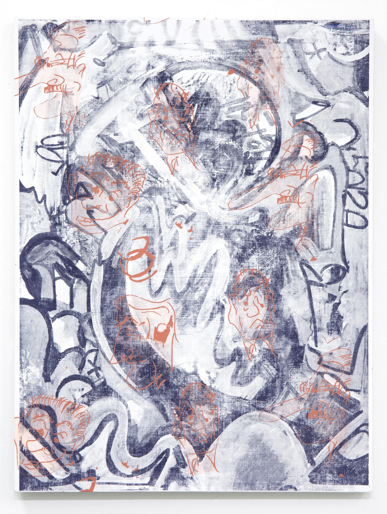

Sofia Leiby is an artist based in New York City, NY, whose paintings carry a formal sophisticated and conceptual acuity which resonate at first glance. In this interview, we discuss one of her recent pieces, entitled Papa’s Faces (2014).
Sofia Leiby: One way I begin paintings is by photographing works I’ve already made and then screenprinting those images onto a new canvas. When viewing my paintings together, ideally the united compositions result in a formal language that develops between them, and one can observe the lineage of the forms. For my solo exhibition earlier this year at Devening Projects+Exhibitions, The Drama of Leisure, I took the opportunity to talk about the paintings in terms of time: how I was making paintings outside of my full-time job and that informed the gestures and likewise the pragmatism that my situation required of me. For me one way to get at the meaning of a painting is to talk about the context, even if ordinary, in which it is made.
Increasingly I’ve begun to use appropriation as a method for mark-making and symbolic reference. For instance, looking at the layers of Papa’s Faces (2014): The background is a photograph of a painting that I made this year integrating graffiti tags made by my then middle-school aged brother in an old notebook. They’re the darker black and white letterforms that you can just barely see in the end result. I was thinking about what it meant for someone to make a tag, and how that was at once a signifier of the personal in a drawing, and was also something that you practiced as you were in class in a lecture, listening through drawing. A tag symbolizes your relationship to both your intimate community of peers and the larger public, but at the same time it’s your signature, it’s your identity, and that you want to get the hand-style and gesture to be as economical and individualized as possible. I saw a metaphorical resonance between these intuitive, practiced forms of mark making that also function as an individual signature, and my own repetition-based process.
The topmost layer of small portraits on this painting are printed versions of drawings made by my grandfather. Since I was little, he has made drawings on Christmas and birthday cards that are these funny little faces. He’s been making them for a very long time– since the war, he said. He always said, “I can do these with my eyes closed.” I took these small drawings, scaled them up and screenprinted them on the surface of the painting. Adding marks from my brother and grandfather was also a way to literally interrupt my typical process and generate a more complex image. In this way, Papa’s Faces contains my own subjectivity, my brother’s, my grandfather’s, as well their individual tags, marks, ways of doing and knowing. It’s collapsing and unfolding of all of these influences.
MR: Do you often take influence from family, or other artists?
SL: Recently, I contacted an artist whose work I saw via Instagram named James Watterson who was posting a lot of drawings in a graffiti-esque style. I was intuitively drawn to the economy and strength of composition in his work. It turns out he manages beverage delivery drivers full-time in Tucson but his dad was an artist and he’s been heavily involved with graffiti for 20 years. He sent me drawings that I’ve scaled up and begun to make compositions based on. With this series and the others, I work to figure out the balance between these appropriated drawings and my own additions. I sometimes title pieces “ ‘after’ P.D.L.” or “J.W.” – this indicates another person’s shape or a marks are incorporated into them.
MR: When you utilize screenprinting as a tool, it seems like you are moving forms and ideas from one realm to another. From an ephemeral realm to being made present again on one of your canvases. What is the formal and conceptual impact of screenprinting in your work?
SL: Screenprinting also allows me to compost a number of individual pieces in the studio. It is also a way to complicate the image by creating contrast between the painted and mechanical mark. I also like the physicality and movement involved with screenprinting: it involves your whole body when you’re dealing with a larger screen, exposing, washing it out, etc. So I don’t see it as much as having a distancing effect (a “phantom limb”) as some people do. Each work is an echo, or a riff on a previous work. They’re not made with a linear narrative in mind, like a line on an X-Y axis; rather they branch off from points on the line. Elements that no longer exist, having been destroyed or painted over, can still be preserved when re-photographed and printed again. This aspect of making the paintings has become a literal document of activities in the studio.
MR: How do you work with scale in your practice?
SL: In the past, my scale made sense for what I was thinking and talking about. The scale was pragmatic, because my studio was also my bedroom, an aspect I addressed when I talked about making them. One tendency I have that I try to avoid is, since I’ve come out of printmaking and drawing, I tend to treat the canvas like paper at times and relying on standard paper sizes (8.5”x10”, 11”x17”, 23”x30” etc). That being said, I am actually in the process of scaling up and am excited to see how it changes the work.
MR: What is next for Sofia Leiby?
SL: In October, I have work in a show at Nebraska Wesleyan University, NB entitled New Abstraction from Chicago. I’ll be doing Untitled Art Fair in Miami with LVL3 Gallery in December. I’m also anticipating a solo exhibition in Europe early next year.